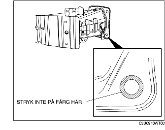

DEMONTERING/MONTERING AV FRÄMRE STÖTFÅNGARFÖRSTÄRKNING
B3E091050070W01
1. Demontera främre stötfångaren. (Se DEMONTERING/MONTERING AV FRÄMRE STÖTFÅNGARE.)
2. Demontera det främre kombinationsljuset. (Se DEMONTERING/MONTERING AV DET FRÄMRE KOMBINATIONSLJUSET.)
3. Demontera signalhornet. (Se DEMONTERING/MONTERING AV SIGNALHORN)
4. Ta undan följande delar så de inte är i vägen
-
(1) Undre kåpa
-
(2) Elektrisk oljepump till servostyrning (LF)
-
(3) Spolarvätskebehållare
5. Demontera i den ordning som anges i tabellen.
-
Försiktigt
-
• Om bult A (endast ett ställe nere till vänster) tas bort, byt alltid ut den mot en speciell utbytesdel (art nr BPYK 50 0Z2) för att säkerställa korrekt jordanslutning av signalhorn.
|
1
|
Bult A
|
|
2
|
Bult B
|
|
3
|
Förstärkning av främre stötfångare
|
6. Montera i omvänd ordning mot demonteringen.
7. Efter monteringen, kontrollera att signalhornet fungerar normalt.
Observera vid montering av förstärkning av främre stötfångare
Återanvända den främre stötfångarförstärkningen
-
Försiktigt
-
• För att säkerställa ordentlig av karossen, applicera inte färg i området där flänsen på bult har kontakt med den främre stötfångarförstärkningen.

Demontering/montering av ny främre stötfångarförstärkning
1. Demontera maskeringstejpen från främre stötfångarförstärkaren.
-
• Om maskeringstejpen redan lossnat, skrapa av eventuell rost eller färgrester från det maskerade området.
2. Efter att ha monterat bult A, applicera bättringsfärg på området på stötfångarförstärkaren som inte är målat.